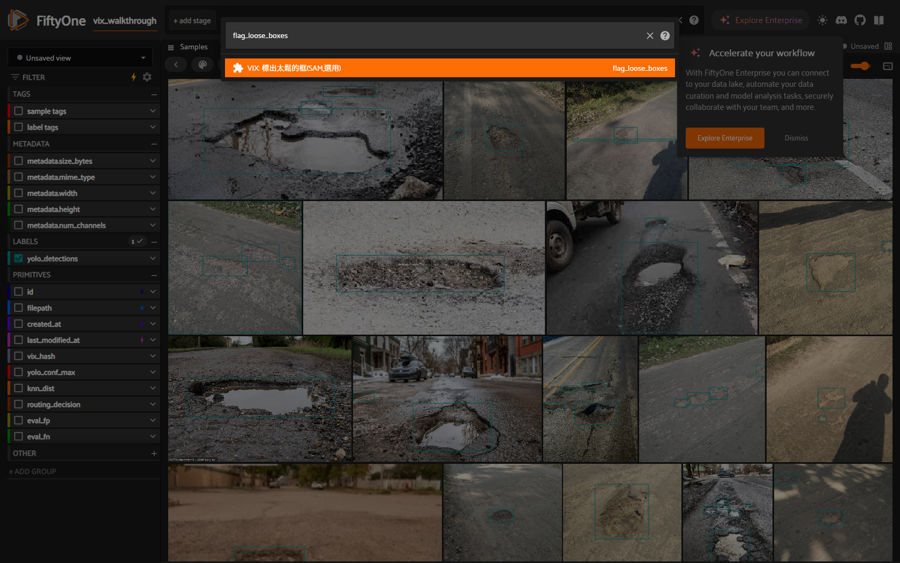
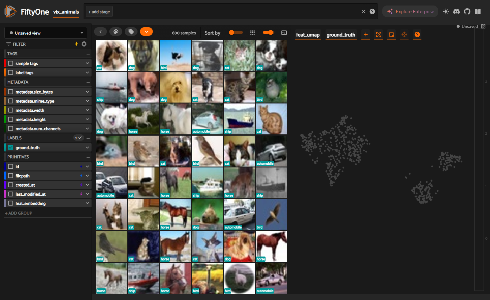

在 FiftyOne App 裡覆核
把 VIX 的訊號丟進視覺化 App,用滑鼠點選覆核(真實操作截圖)。
Tier B 喜歡用滑鼠點、用眼睛看?把 VIX 的訊號丟進 FiftyOne App,在
@vix/review 外掛裡點選覆核。需 Tier-2(Python 3.11 + FiftyOne)。下面的截圖都是在真實的 pothole 資料上實際操作。開啟 App
vix diagnose ./dataset --labels voc --weights best.pt --audit
vix weakness-report --worklist # 把待辦轉成可點的 saved views(vixq:* 標籤)
vix app # 開 FiftyOne + @vix/review 外掛成功的樣子:瀏覽器自動開啟
http://localhost:5151,看到影像網格;左側出現 review/pass 與 vixq:* 工作清單的 saved views;右上可開 operator 瀏覽器(快捷鍵 `)。App 開不起來 / 空白?九成是 Python 版本:FiftyOne 需要 Python 3.11。請在
.venv311 裡跑(見 安裝),不要用基礎的 3.13/3.14。其次檢查 python -c "import fiftyone" 是否成功。實際操作(逐步截圖)
- 用真實資料開啟 App 的網格檢視。

- 打開 operator 瀏覽器,選
generate_weakness_report並挑 eval。
- 在面板裡直接看弱點報告(mAP、per-class、混淆)。

- 用
flag_label_issues/audit_label_errors標出疑似錯標,形成工作清單。
- 點一張被標記的樣本,看到那個有問題的框。

- 用
flag_loose_boxes(SAM)找出太鬆的框。
完整 10 步走查(含可點的覆核佇列):見 GUI_WALKTHROUGH.html。
(選用)看 Embeddings 分群
在 App 的 Embeddings 面板可以框選一個群集、只看選取、檢視那些影像是什麼 —— 很適合找離群與重複。


圖解走查見 EMBEDDINGS_HOWTO.html。